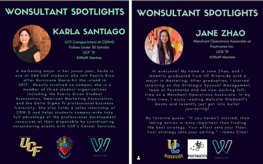

Wonsulting
Highlights from my work as a Web Development & Growth intern at Wonsulting, a career consulting firm dedicated to helping underdogs turn into winners, especially non-target school, first-generation students.
My Role / What I Did
I was selected from a competitive applicant pool to be part of Wonsulting's first set of interns. I served as a Web Development & Growth Intern between September 2019-March 2020), and I currently still serve as an Ambassador / Mentee. Some of my main tasks and accomplishments are listed below.
- Migrated website content & information from Weebly to Wix on a newly redesigned site interface, using HTML + CSS to develop new features
- Documented and analyzed social media growth weekly on Instagram & Linkedin, proposing ideas to optimize growth/presence
- Created Wonsulting's first "brand book" guide to clarify brand vision and improve efficiency
- Designed infographics to be used on social media platforms and website
- Assisted with marketing for local workshops
- Promoted Wonsulting events, workshops, and services on campus at my university / online
Online Presence / Social Media Growth
- I created infographic templates using Canva to be shared on Wonsulting's social media pages (Instagram & Linkedin). The template I designed below was used for 20+ "mentee" spotlights posted by the company.
- I tracked Wonsulting's growth on Instagram and Linkedin weekly, tracking social media engagement through Excel, Sheets, & Dashboards, identifying high-performing posts/content to replicate & increased page views by 46% at 2,434 follower count.
- Content strategy tactics proposed by me led to an increase in the company's LinkedIn follower count from 600 to 1,400 in less than 5 months.

Ambassador Role
As an ambassador, I've helped to host Wonsulting events, and promote workshops & services on campus at my university / online. Additionally, as a first generation, low income college student myself, I've contributed to promoting Wonsulting's underdog-turned-winner mission, through sharing my own personal story and offering mentorship.
Website Migration (Fall 2019)
Working closely with the entire executive team and fellow intern, I assisted the lead UX/UI Designer and Web Developer with bringing Wonsulting's newly designed website to life. I helped organize and migrate website content between the old and new site, as the company transitioned from the Weebly CMS to the Wix CMS. Additionally, I used HTML + CSS to help develop various features on the new site. My efforts in helping to rebuild the company website through UX design & strategy increased website clicks and traffic by 43% within the first month of launch. This site has continued to be used and updated by Wonsulting presently. You can visit Wonsulting's current website below.
Visit Wonsulting Website
Brand Book Guide
I proposed and developed Wonsulting's first brand book guide. The guide organized all of the company's logos, colors/fonts, infographic templates, workshop structures, content strategy, an ongoing list of all engagements, event photos/videos, marketing materials, etc. and improved internal operations / efficiency by 64%.